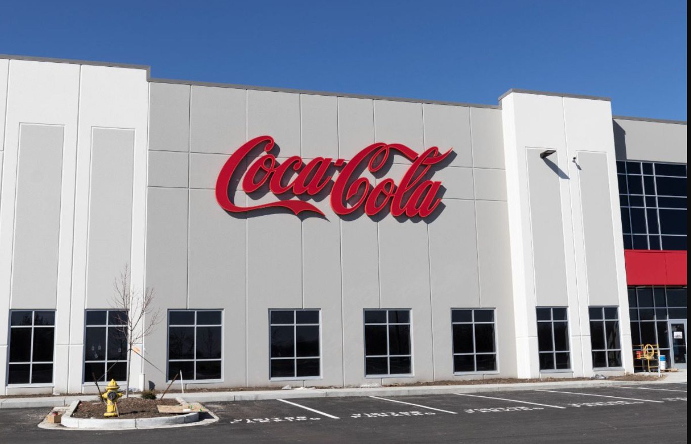

SQL queries used to analyze sales data. It includes tracking revenue, customer's purchasing behaviour, Top performing products, and calculate sales growth. The goal is to derive actionable insights from transactional data to support business decisions and strategic planning.
This project adopted a data-driven research approach to analyze the international education choices of Nigerian Students and provide them with actionable insights for informed decision making. Both quantitative and qualitative techniques were employed

This contains data analysis focused on Coca Cola's beverage performance across various cities,states and retailers in the United states. Using structured SQL queries and Excel visualization, this project uncovers key trends in product demand, regional performance, and retailer contributions, providing actionable insights into market behaviour and business growth opportunities.

This project focuses on analyzing comprehensive sales data to uncover trends, relationship, and insights that drive business growth.

This analysis provides a comprehensive overview of the international brewery industry, examining market dynamics, production trends, consumer preferences, and competitive landscapes across key regions, offering insights for stakeholders aiming to navigate and capitalize on global market developments.
This Project showcase the end-to-end process of preparing raw data and transforming it into structured quiz content using Python. It demonstrates practical applications of Python in data preprocessing and content automation.
{kind=link}
{kind=link}
{kind=link}
{kind=link}